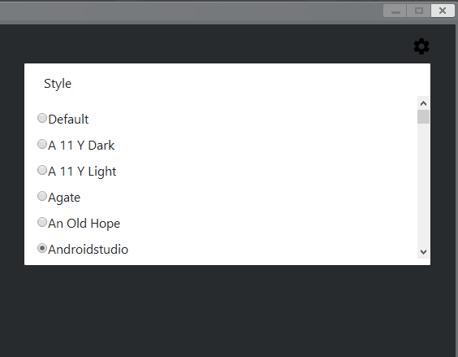

Python console in Garry’s Mod¶
You can access the Python interpreter from inside of Garry’s Mod. Just use the python console command:
Everything from pygmod.gmodapi will be imported automatically.
Note
At the moment, only the client realm can be worked with. Support for the server realm will be added later.
You can use up arrow and down arrow keys to search through the input history.
Styles¶
You can choose from any of 89 code styles provided by highlight.js library.

To change the code style, click the cog in the top right corner of the console and select the style. This style will be automatically applied when you open the console again.
